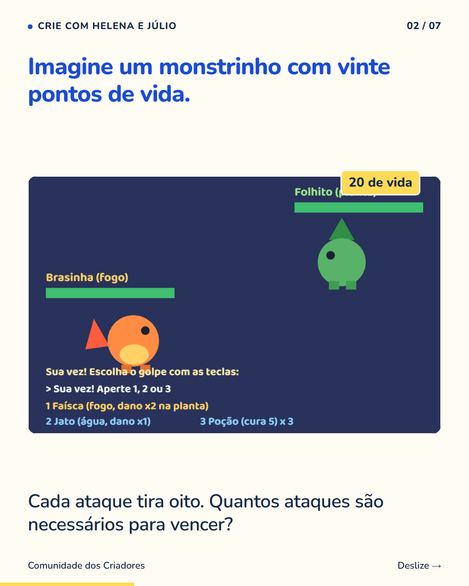
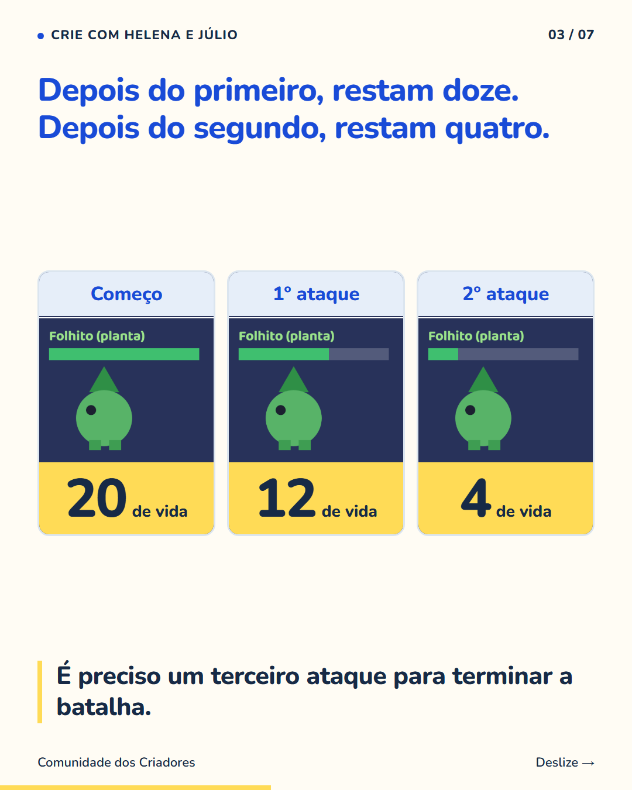
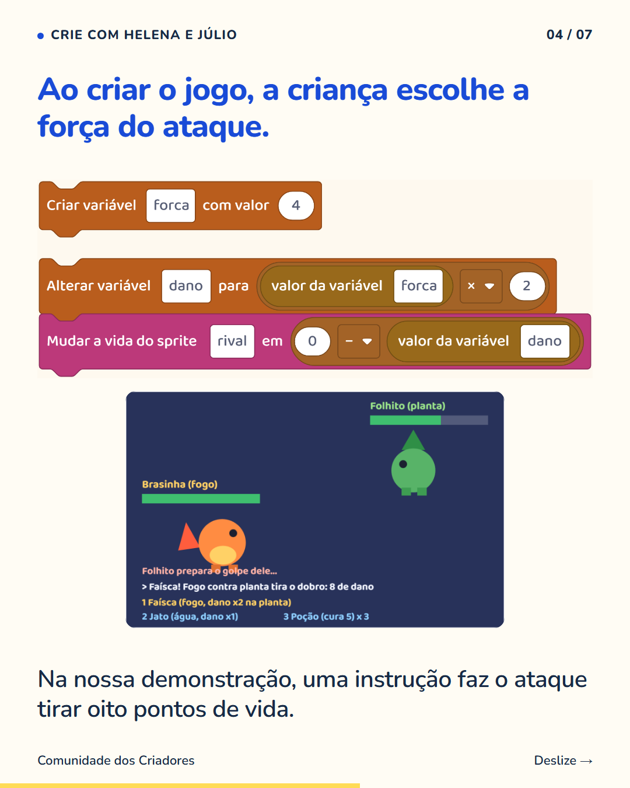
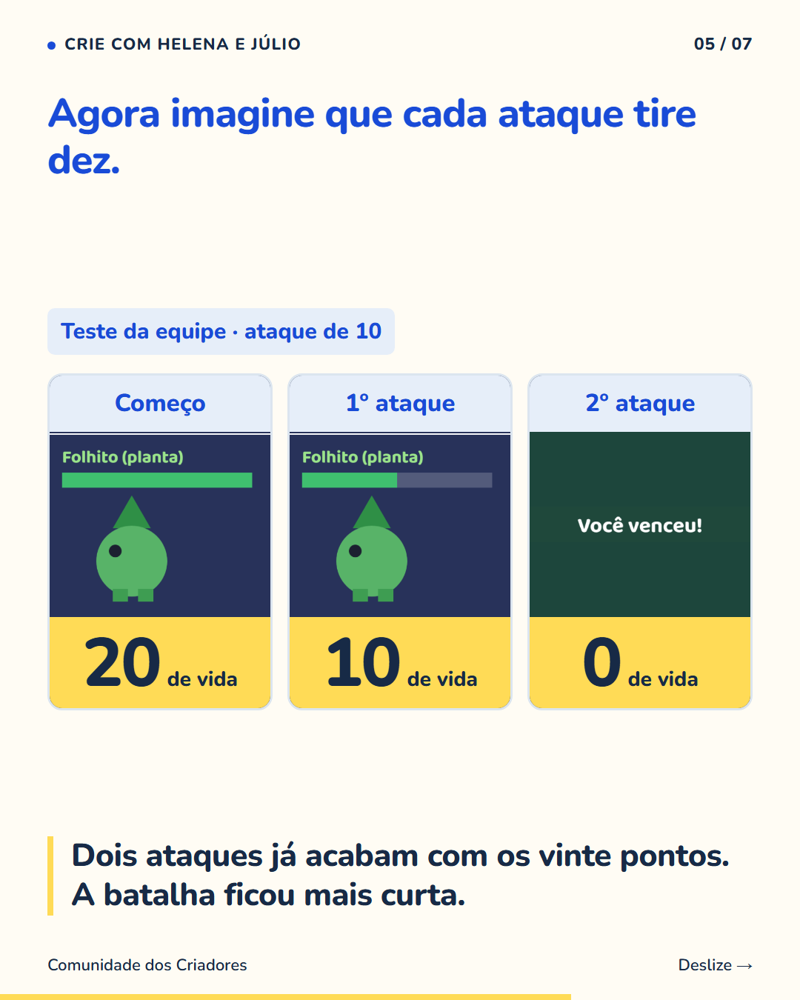

7 slides · 1080 × 1350 · Copy revisada · Dos números à escolha do ataque




Na criação de um jogo, mudar um número pode mudar toda a duração de uma batalha. Se o monstrinho tem vinte pontos de vida e cada ataque tira oito, dois ataques deixam quatro pontos. Com dez por ataque, a luta acaba no segundo. A conta ajuda a prever o resultado antes de jogar. Quem está criando pode perguntar: quero uma batalha mais curta ou mais longa? Então escolhe um valor, testa e compara. A matemática aparece como parte de uma decisão sobre algo que a criança está construindo. Siga o perfil para conhecer outros exemplos de aprendizado na criação de jogos.